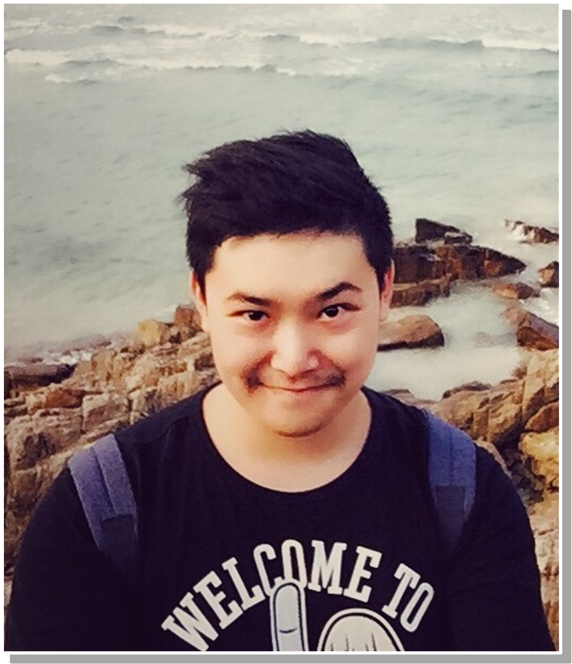

<!DOCTYPE html PUBLIC "-//W3C//DTD XHTML 1.1//EN"
  "http://www.w3.org/TR/xhtml11/DTD/xhtml11.dtd">
<html xmlns="http://www.w3.org/1999/xhtml" xml:lang="en">
<head>
<meta name="generator" content="jemdoc, see http://jemdoc.jaboc.net/" />
<meta http-equiv="Content-Type" content="text/html;charset=utf-8" />
<link rel="stylesheet" href="jemdoc.css" type="text/css" />
<link rel="stylesheet" href="jemdoc.css" type="text/css" />
<title></title>
<!-- MathJax -->
<script type="text/javascript" src="https://cdn.mathjax.org/mathjax/latest/MathJax.js?config=TeX-AMS-MML_HTMLorMML">
</script>
<script type="text/x-mathjax-config">
MathJax.Hub.Config({
	  TeX: { equationNumbers: { autoNumber: "AMS" } }
});
</script>
<!-- End MathJax -->
</head>
<body>
<div id="layout-content">
<p><br /></p>
<h1><b>Hang Zhang</b></h1>
<p> 
<b>Master of Philosophy</b> <br /> </p>
<p><a href="http://www.cse.cuhk.edu.hk/" target=&ldquo;blank&rdquo;>Department of Computer Science &amp; Engineering (CSE)</a><br />
<a href="http://www.cuhk.edu.hk/english/" target=&ldquo;blank&rdquo;>The Chinese University of Hong Kong (CUHK)</a> <br />
Membership: ACM, IEEE, AAAI, CCF member
<br /> </p>
<p><b>Email:</b> hzhang[at]cse.cuhk.edu.hk <br />
<b>Office:</b> Rm 913, Ho Sin Hang Engineering Building</p>
<p><br /> <br /></p>
<h2>Biography [<a href="https://appsrv.cse.cuhk.edu.hk/~hzhang/others/cv_zhanghang.pdf" target=&ldquo;blank&rdquo;>Resume/CV</a>][<a href="https://appsrv.cse.cuhk.edu.hk/~hzhang/others/research_summary.pdf" target=&ldquo;blank&rdquo;>Research Summary</a>]</h2>
<p>Hang Zhang is currently a second year M.Phil student in Department of Computer Science & Engineering at The Chinese University of Hong Kong (CUHK). 
He is supervised by Prof. <a href="http://www.cse.cuhk.edu.hk/~fyyoung/" target=&ldquo;blank&rdquo;>Evangeline F. Y. Young</a> and co-supervised by Prof. <a href="http://www.cse.cuhk.edu.hk/~byu/" target=&ldquo;blank&rdquo;>Bei Yu</a>. 
Before that, he received the B. Eng degree from <a href="http://www.scu.edu.cn/en/" target=&ldquo;blank&rdquo;>Sichuan University (SCU)</a> in 2015, under the supervision of Prof. <a href="http://www.scu.edu.cn/eie/faculty/webinfo/2010/10/1286178494662243.htm" target=&ldquo;blank&rdquo;>Xiaohai He</a>.</p>
<p>He started his research in VLSI CAD/EDA in August 2015. His main research interests include but are not limited to machine learning and its applications in design for manufacturability and physical design. 
He is also interested in machine learning theory and its applications in the related areas, such as robotics, computer vision, and data mining. 
</p>
<h2>Updates</h2>
<div class="infoblock">
<div class="blockcontent">
<ul>
<li><p>[11/2016 ] One paper is accepted to <a href="http://www.ispd.cc/" target=&ldquo;blank&rdquo;>ISPD 2017</a></p>
</li>
<li><p>[09/2016 ] I am lucky to have a lunch with <a href="http://www.eda.ce.titech.ac.jp/~atushi/" target=&ldquo;blank&rdquo;>Prof. Atsushi Takahashi</a>@<a href="http://www.titech.ac.jp/english/" target=&ldquo;blank&rdquo;>Tokyo Institute of Technology</a> and <a href="http://www.u-aizu.ac.jp/research/facultylist/endetail?cd=35" target=&ldquo;blank&rdquo;>Prof. Yukihide Kohira</a>@<a href="http://www.u-aizu.ac.jp/en/" target=&ldquo;blank&rdquo;>The University of Aizu</a> at Jeju, Korea after a <a href="http://www.epapers.org/apccas2016/ESR/session_view.php?PHPSESSID=q4tf28ls4c88pvaekbranblig4&amp;session_id=28" target=&ldquo;blank&rdquo;>special session</a> talk. Here's the <a href="http://appsrv.cse.cuhk.edu.hk/~hzhang/figures/Jeju_1.jpeg" target=&ldquo;blank&rdquo;>picture</a> of us.  </p>
</li>
<li><p>[07/2016 ] Two papers are accepted to <a href="https://iccad.com/" target=&ldquo;blank&rdquo;>ICCAD 2016</a>.</p>
</li>
<li><p>[03/2016 ] Our team achieved <font color="red">No. 2</font> in the CAD contest at <a href="http://www.ispd.cc/contests/16/ispd2016_contest.html" target=&ldquo;blank&rdquo;>ISPD 2016</a>.</p>
</li>
<li><p>[11/2015 ] Our team won <font color="red"> the Championship </font> in the CAD Contest at <a href="http://cad-contest.el.cycu.edu.tw/CAD-contest-at-ICCAD2015/" target=&ldquo;blank&rdquo;>ICCAD 2016</a>.</p>
</li>
</ul>
</div></div>
<h2>Publications</h2>
<ul>
<li><p><a href="http://dl.acm.org/citation.cfm?id=2967032" target=&ldquo;blank&rdquo;>Enabling Online Learning in Lithography Hotspot Detection with Information-Theoretic Feature Optimization</a>, <br /> 
<b>Hang Zhang</b>, Hangyu Yang , Bei Yu and Evangeline F. Y. Young. <br />
<i>IEEE/ACM International Conference on Computer-Aided Design (<b>ICCAD</b>)</i>, Austin TX, USA, Nov. 7-10, 2016. <br />
[<a href="http://appsrv.cse.cuhk.edu.hk/~hzhang/papers/a47-zhang.pdf" target=&ldquo;blank&rdquo;>pdf</a>]</p>
</li>
</ul>
<ul>
<li><p>Bilinear Lithography Hotspot Detection, <br />
<b>Hang Zhang</b>, Fengyuan Zhu, Haocheng Li, Evangeline F. Y. Young and Bei Yu. <br />
<i>ACM International Symposium on Physical Design (<b>ISPD</b>)</i>, Portland OR, USA, Mar. 19-22, 2017. (Accepted)</p>
</li>
</ul>
<ul>
<li><p>VLSI Layout Hotspot Detection Based on Discriminative Feature Extraction, <br />
<b>Hang Zhang</b>, Haoyu Yang, Bei Yu and Evangeline F. Y. Young. <br />
<i>IEEE Asia Pacic Conference on Circuits and Systems (APCCAS)</i>, Jeju, Korea, Oct. 25-28, 2016. (<b>Invited Paper</b>) <br />
[<a href="http://appsrv.cse.cuhk.edu.hk/~hzhang/papers/APCCAS16_HSD.pdf" target=&ldquo;blank&rdquo;>pdf</a>]</p>
</li>
</ul>
<ul>
<li><p><a href="https://arxiv.org/abs/1611.04686" target=&ldquo;blank&rdquo;>Robust Matrix Regression</a>, <br />
<b>Hang Zhang</b>, Fengyuan Zhu, Shixin Li. <br />
Technical report in Arxiv, 2016. <br />
[<a href="http://appsrv.cse.cuhk.edu.hk/~hzhang/papers/1611.04686v1.pdf" target=&ldquo;blank&rdquo;>pdf</a>]  </p>
</li>
</ul>
<ul>
<li><p><a href="http://dl.acm.org/citation.cfm?id=2980084" target=&ldquo;blank&rdquo;>RippleFPGA: A Routability-Driven Placement for Large-Scale Heterogeneous FPGAs</a>, <br />
Chak-Wa Pui, Gengjie Chen, Wing-Kai Chow, Jian Kuang, Ka-Chun Lam, Peishan Tu, <b>Hang Zhang</b>, Evangeline F.Y. Young, Bei Yu. <br />
<i>IEEE/ACM International Conference on Computer-Aided Design (<b>ICCAD</b>)</i>, Austin TX, USA, Nov. 7-10, 2016. (<b>Invited Paper</b>) <br />
[<a href="http://appsrv.cse.cuhk.edu.hk/~hzhang/papers/a67-pui.pdf" target=&ldquo;blank&rdquo;>pdf</a>]</p>
</li>
</ul>
<h2>Honors &amp; Awards</h2>
<h3>Postgraduate</h3>
<p>Second Place Award in CAD contest at <a href="http://www.ispd.cc/contests/16/ispd2016_contest.html" target=&ldquo;blank&rdquo;>ISPD</a>, held by Xilinx, 2016             <br />
<b>Championship</b> of CAD Contest at <a href="http://cad-contest.el.cycu.edu.tw/CAD-contest-at-ICCAD2015/" target=&ldquo;blank&rdquo;>ICCAD</a>, held by Stanford &amp; IBM, 2015 <br />
Full Postgraduate Studentship at CUHK, 2015-2017.																				   <br /></p>
<h3>Undergraduate</h3>
<p>Excellent Bachelor Thesis Award at SCU (<b>Top 1%</b>), 2015 										                        <br />
Excellent National Undergraduate Training Project Award (<b>Top 3%</b>), 2015                            <br />                                
Third Prize Award, Intel Cup Undergraduate Electronic Design Contest, 2014													<br />
First Prize Award, National Robot Competition, 2013																				          <br />
Silver Medal, ACM/ICPC Asia Regional Invitation Contest (Chengdu Site), 2013												<br />
Talents Project in <a href="http://jwc.scu.edu.cn/wyz/" target=&ldquo;blank&rdquo;>Wu Yuzhang Honors College</a> at SCU (<b><font color="red"> Top 0.1%</font></b>), 2013-2015 <br />
Scholarships for Excellent Comprehensive Performance at SCU, 2012-2015 <br />
Excellent Engineer Project of Chinese Ministry of Education, 2011-2015 <br /></p>
<h2>Teaching </h2>
<p>2015-2016 fall&nbsp;&nbsp;&nbsp;&nbsp;&nbsp;&nbsp;&nbsp;&nbsp;&nbsp;&nbsp;ENGG2440A&nbsp;&nbsp;&nbsp;&nbsp;&nbsp;&nbsp;&nbsp;&nbsp;&nbsp;&nbsp;<a href="http://www.cse.cuhk.edu.hk/~andrejb/engg2440/" target=&ldquo;blank&rdquo;>Discrete Mathematics for Engineers</a> <br />
Instructor: <a href="http://www.cse.cuhk.edu.hk/~andrejb/" target=&ldquo;blank&rdquo;>Bogdanov Andrej</a></p>
<h2>Reviewers/External Reviewers</h2>
<h3>Journal</h3>
<p>IEEE Transactions On Computer-Aided Design (TCAD)  <br />
Journal of Micro/Nanolithography, MEMS, and MOEMS (JM3)  <br /></p>
<h3>Conference</h3>
<p>IEEE/ACM Design Automation Conference (DAC)  <br />
IEEE/ACM Asia and South Pacific Design Automation Conference (ASPDAC)  <br />
Great Lakes Symposium on VLSI (GLSVLSI)  <br /></p>
<h2>&nbsp;</h2>
</div>

<xsl:stylesheet xmlns:xsl="http://www.w3.org/1999/XSL/Transform" version="1.0">
<xsl:output method="text" />
<xsl:template match="/Footer">
<![CDATA[
<!-- Start of StatCounter Code for Microsoft Office Live -->
<script type="text/javascript">
//<![CDATA[
var sc_project=11149150; 
var sc_invisible=0; 
var sc_security="59193237"; 
var scJsHost = (("https:" == document.location.protocol) ? "https://secure." : "http://www.");
document.write("<sc"+"ript type='text/javascript' src='" + scJsHost+ "statcounter.com/counter/counter_xhtml.js'></"+"script>");
//]]>
</script>
<noscript><div class="statcounter"><a title="hit counter" href="http://statcounter.com/free-hit-counter/" class="statcounter"></a></div></noscript>
<!-- End of StatCounter Code for Microsoft Office Live -->
</xsl:template>
</xsl:stylesheet>

</body>
</html>
